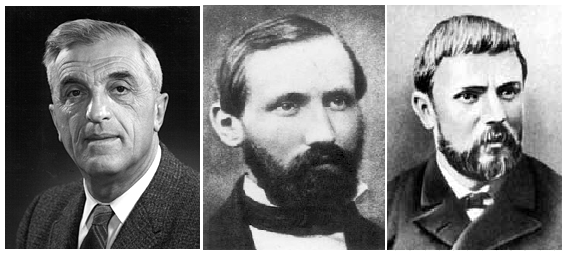
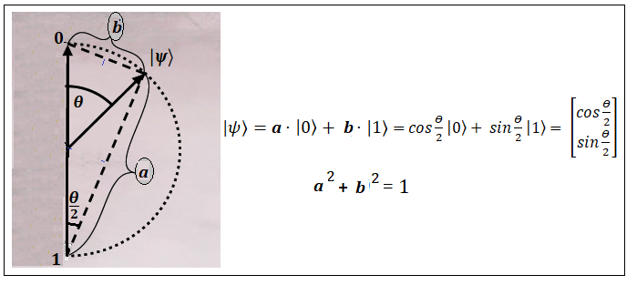
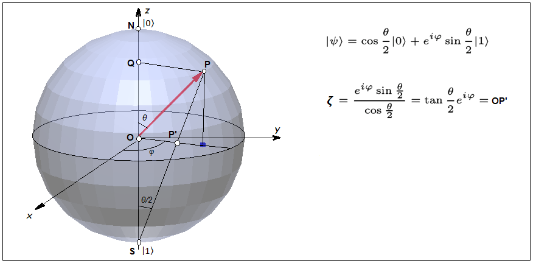
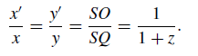
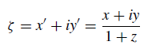
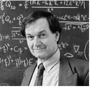
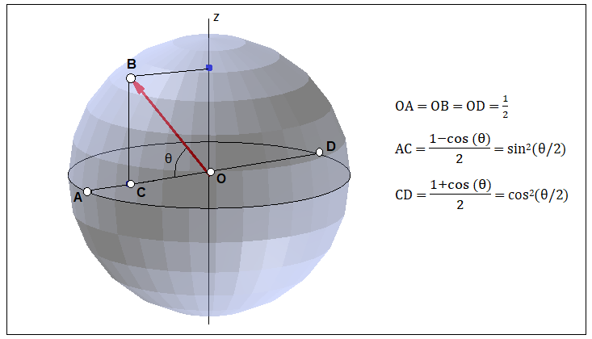

To determine the value of the quantum state |ψ〉, set the values of the polar and azimuth angles
either using the GUI in the upper right corner of the program, or using the keys located
under the GUI. The intersection of a red-colored straight line with a gray horizontal plane
sets the value of complex coordinates. This value is (Z = ...) you can see it
at the very bottom of the middle part of the program window.
In more detail, the fractional-linear transformation (mapping points lying on a sphere
to a complex plane) will be discussed in the next chapter.
Sphere rotation - left mouse button drag
Sphere size - middle mouse button drag, or mousewheel
Sphere movement on screen - right mouse button drag
В этом разделе мы исследуем сферу Блоха. Это геометрическое представление квантового состояния в двухуровневой системе, которое носит название кубит. Сама сфера получила наазвание в честь швейцарского физика Феликса Блоха. Но часто эта сфера, когда она используется при описании стереографической проекции, носит название сферы Римана, а при описании состояния поляризации света ее обычно называют сферой Пуанкаре.
Кубит является простейшей квантово-механической системой и обобщает классический бит.
Так как кубит представляет собой двухуровневую систему то он может иметь два возможных значения 0 и 1:
Фактически это уже рассмотренные квантовые состояния |u〉 и |d〉. Основная новая особенность кубита по сравнению
с классическим битом – это возможность иметь состояния суперпозиции значений 0 и 1.
То есть кубит может находиться в произвольной суперпозиции двух базовых состояний |0〉 и |1〉.
Математическое описание представлено в терминах суммы двух базисных векторов,
взвешенных по (комплексным) амплитудам. Это соответствует 2-мерному вектору с комплексными коэффициентами а и b,
которые является элементом векторного пространства C2. Такая суперпозиция может быть истолкована
как интерференция двух возможностей. Квантовое остояние кубита описывается как
|ψ〉 = a⋅|0〉 + b⋅|1〉
Вектор состояния |ψ〉 определяется суммой двух векторов
|ψ〉 = a⋅|0〉 + b⋅|1〉
В этой формуле |0〉 и |1〉 являются базисными векторами. Коэффициенты a и b стоящие
перед базисными векторами являются в общем случае комплексными числами.
Эти два числа называются амплитудами вероятности.
Как известно любое комплексное число можно записать в показательной форме.
Числа a и b в показательной форме выглядят следующим образом:
a = ra⋅eiφa
b = rb⋅eiφb
Вектор состояния |ψ〉 в этом случае примет следующий вид:
|ψ〉 = ra⋅eiφa|0〉 + rb⋅eiφb|1〉
Введем следующее обозначение
φ = φb-φa
и, следовательно,
φb = φ + φa
Тогда предыдущее выражение для вектора состояния |ψ〉 можно переписать в таком виде
|ψ〉 = ra⋅eiφa|0〉 + rb⋅eiφb|1〉 =
ra⋅eiφa|0〉 + rb⋅eiφ⋅eiφa|1〉 =
eiφa(ra|0〉 + rb⋅eiφ|1〉)
Для вектора состояния имеет значение только отношение в котором находятся между собой
амплитуды вероятности. Поэтому можно безболезненно умножить обе состовляющие вектора |ψ〉 на
одно и то же число равное e-iφa. После этого умножения получим
следующее выражение для |ψ〉
|ψ〉 = ra⋅|0〉 + rb⋅ei(φa-φb)⋅|1〉 =
ra⋅|0〉 + rb⋅eiφ⋅|1〉
Угол φa имеет название "глобальная фаза". Так как глобальная фаза появляется
только в результате математических преобразований, то она не имеет физического смысла и поэтому ее можно
в дальнейшем не учитывать. В отличие от глобальной фазы угол φ имеет прямой физический смысл, который
определяет разность фаз между компонентами вектора состояния. Угол φ имеет собой название "локальная фаза".
Локальная фаза играет большую роль при интерференции электронов.
Амплитуды вероятности a и b обычно нормируются на 1.
Следовательно и сумма ra2 + rb2 также должна
быть равной 1:
ra2 + rb2 = 1
Исходя из этого удобно ввести следующую нормировку (т. к. всегда cos2+sin2=1)
ra = cos(θ/2)
rb = sin(θ/2)
Тогда выражение для вектора состояния |ψ〉 примет вид
|ψ〉 = cos(θ/2)|0〉 + sin(θ/2)⋅eiφ|1〉
Рассмотрим сферу имеющюю единичный радиус и параметризацию поверхности в терминах θ и φ, которые фактически
являются сферическими полярныыми координатами для поверхности сферы.
Каждому вектору (он называется вектором Блоха), который расположен на сфере соответствует вектор квантового состояния |ψ〉.
Задавая вектор Блоха (координаты θ и φ на сфере) мы получаем (после соответствующих вычислений) вектор
квантового состояния |ψ〉, значение которого отображается в программе визуализации.
Также в программе визуализации отбражаются вероятности P(0) и P(1). В этом случае точка на сфере, задаваемая вектором Блоха,
(ее географическая широта) будет пропорционально отображать эти вероятности при изменении угла θ.
- - - - - - - - - - - - - - - - - - - - - - - - - - - - - - - - - - - - - - - - -
Можно посмотреть на следующий рисунок, который (весьма условно) демонстрирует взаимосвязь квантового состояния
со значениями некоторых величин. В отличие от настоящей сферы Блоха расстояние от 0 до 1 на этом рисунке равен 1.
Иными словами радиус на рисунке равен 0.5, а радиус сферы Блоха равен 1.

Угол θ/2 в спинорном пространстве состояний соответствует углу θ в физическом пространстве
пространстве состояний электрона. Об этом подробно говорилось в предыдущих частях.
- - - - - - - - - - - - - - - - - - - - - - - - - - - - - - - - - - - - - - - - -
Далее приведен рисунок показывающий стереографическую проекцию единичной сферы
с южного полюса S на плоскость z = 0. Стереографическая проекция отображает
северное полушарие на область лежащую внутри единичной окружности.
Южное полушарие отображается на область за пределами единичной окружности.
Экватор совпадает с единичной окружностью.

Пусть O(0, 0, 0) - центр сферы, N(0, 0, 1) - северный полюс, а S(0, 0, -1) южный полюс.
Пусть P’(x’, y’, 0) - пересечение прямой SP с экваториальной плоскостью z = 0,
а Q(0, 0, z) – проекция P(x, y, z) на ось z. Точка P’ называется стереографической проекцией точки P.
Из подобных треугольников SOP’ и SQP мы находим:

Теперь введем в плоскости z = 0 комплексную переменную ζ

В программе визуализации комплексная переменная ζ обозначена стандартным образом принятым для
комплексных чисел ζ = z = x + iy. В этом выражении x и y являются коэффициентами перед
действительной и мнимой частями переменной z, и уже не пространственными координатами (x, y, z).
В программе визуализации комплексная плоскость расположена на пространственной плоскости z = 0.
Комплексное число ζ = z = x + iy находится чисто геометрически как точка P' пересечения
проецирующей прямой PS с плоскостью z = 0.
Не знаю, использовал ли кто-либо еще такой способ для нахождения значения координат на комплексной плоскости
при отображении на нее сферы, но для меня он оказался черезвычайно удобным. В следующем разделе можно увидеть
его прменение при отображении поворотов на сфере на комплексную плоскость - дробно-линейное преобразование на практике.
- - - - - - - - - - - - - - - - - - - - - - - - - - - - - - - - - - - - - - - - -
Теория дробно-линейных преобразований великолепно описана в книге М.М Постникова
"Аналитическая геометрия" из его серии книг "Лекции по геометрии"
в "Лекции 27". Достоинством его описания отображения сферы на комплексною плоскость
является полное приведение всех выкладок используемых при математических преобразованиях.
В других книгах эти выкладки часто опускаются либо полностью либо частично и это создает
большие трудности.
Таким образом любая точка на сфере отображается на комплексную плоскость. Единственная точка
на сфере - южный полюс S - не имеет образа на комплексной плоскости лежащей
на пространственной плоскости z = 0.
Если |ψ〉 = a⋅|0〉 + b⋅|1〉 то мы можем разделить правую часть равенства на коэффициент a.
Физическое состояние спина не изменится так значение имеет только отношние числа b к числу a.
В результате получим |ψ〉 = a⋅|0〉 + (b/a)⋅|1〉. Число (b/a) - это обыкновенное комплексное число.
Но теперь, если (b/a) принимает значение равное ∞, то спин направлен вертикально вниз.
Когда число задают в виде отношения двух других чисел, то такой способ называют введением
однородных координат. Подробно про это рассказывается в перечисленных ниже кигах Роджера Пенроуза.
Таким образом каждая точка сферы имеет свое отображение на комплексной плоскости. Например, задав в программе визуализации
в GUI полярный угол электрона θ° = 0 получим (синим цветом в прямоугольнике в средней части окна программы) z = 0 + 0·i,
а задав полярный угол электрона θ° = 180 получим (красным цветом в прямоугольнике в средней части окна программы) z = ∞,
В следующей главе мы вернемся к отображениям на комплексной плоскости и посмотрим как на эту плоскость отображаются
окружности, которые получаются при вращении вектора Блоха на сфере.
- - - - - - - - - - - - - - - - - - - - - - - - - - - - - - - - - - - - - - - - -

Пожалуй лучше всех про использование сферы Римана в квантовой механике рассказывает в своих
книгах Роджер Пенроуз. В них он пытается именно объяснить в чем заключается смысл
квантовой механики и особенно сферы Римана.
Роджер Пенроуз написал несколько замечательных книг в которых затронуты эти темы:
"Новый ум короля", "Тени разума. В поисках науки о сознании",
"Мода, вера, фантазия и новая физика Вселенной",
"Путь к реальности, или Законы, управляющие Вселенной".
В программе визуализации настоящего раздела полярный угол электрона задается в пределах 0° - 180°.
При задании азимута в пределах 0° - 360° этого достаточно для получения любого квантового состояния кубита |ψ〉
и при этом появляется возможность отображения сферы на комплексную плоскость.
А в программе визуализации предыдущего раздела полярный угол электрона можно было задать в пределах 0° - 360° и поэтому
требовалось два полных поворота электрона на 720° для поворота спинора на 360°. С точки зрения
наглядности понимания механики спина, на мой взгляд, этот способ является более подходящим, так как он ясно показывает
как поворот электрона в физическом пространстве соотносится с поворотом электрона в спинорном (математическом) пространстве.
Но при этом, к сожалению, необходимо отказаться от отображения сферы на комплексную плоскость
и поэтому этот способ не получил распространения.
- - - - - - - - - - - - - - - - - - - - - - - - - - - - - - - - - - - - - - - - -
Предположим теперь, что сфера Блоха, показанная на следующем рисунке имеет, радиус равный 0.5.

Пусть исходное квантовое состояние спина на сфере задано точкой B.
Тогда вероятность квантового перехода из точки B в точку A выражается длиной отрезка CD,
а вероятность перехода из точки B в точку D выражается длиной отрезка AC.
- - - - - - - - - - - - - - - - - - - - - - - - - - - - - - - - - - - - - - - - -
Также как и на действительной плоскости, на которой преобразования осуществляются при прмощи матриц имеющих размер 2×2,
на комплексной плоскости, на которую была спрецирована сфера, можно осуществлять преобразования также при помощи
матриц имеющих размер 2×2. Только в этом случае матрицы будут комплексными. С преобразованиями
на комплексной плоскости тесно связано понятие спинора.
Спинором первого ранга называется вектор в двумерном комплексном пространстве с детерминантом преобразования одного
вектора в другой равным единице. В этом смысле, например векторы |0〉 и |1〉, так же как и многие квантовые объекты
с которыми мы сталкивались ранее, являются спинорами.
Спинорам, посвящено довольно много статей в интернете.
Приведу ссылки на самые цитируемые статьи:
Статья Andrew M. Steane'а An introduction to spinors.
Статья Gerrit Coddens'а Spinors for everyone.
И книга "From Spinors to Quantum Mechanics" этого же автора.
Но надо сказать, что хотя по названиям статей, они претендуют на достаточно простое и популярное изложение теории
я очень много чего не понял из прведенных выше текстов. Хотя на первый взгляд все описано весьма подробно и вроде бы
без особых сложностей, но многие формулы даются фактически (на мой взгляд) без вывода.
Предполагаю, что для чтения этих работ требуется не только хорошее знание английского языка, но и достаточно большое время
для вдумчивого понимания написанного и восполнения пропущенных математических выкладок.
Более понятной (хотя тоже не во всем) для меня оказалась книга
"Twenty-First Century Quantum Mechanics: Hilbert Space to Quantum Computers". Авторы - Guido Fano и S.M. Blinder.
Так как перевода на русский язык этой книги нет, то я решил перевести интересующую меня часть этой книги -
Изотропные векторы, стереографическая проекция и спиноры в сферических координатах.
Возможно, этот перевод поможет лучше понять теорию спиноров не только мне.
Очень рекомендую (!) видеолекции из youtube, на сайте lightcone посвященные теории групп
Элементарное введение в теорию групп.
Спинорам в квантовой механике посвящены 11 и 12 видеолекции.
- - - - - - - - - - - - - - - - - - - - - - - - - - - - - - - - - - - - - - - - -
Программа сделанная для отображения сферы Блоха в University of St Andrews Bloch sphere.
На сайте этого университета можно найти большое количество online программ относящихся к квантовой механике.